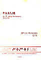
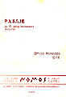
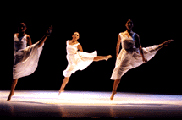
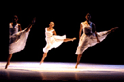
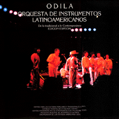
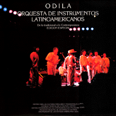

|
Emilio Mendoza |
Tempus I - IV
 Alborada  Pasaje
Alborada  Pasaje Sin-Cadenas.tube
Sin-Cadenas.tube  Aloha Tacoa
Aloha Tacoa  Etnocidio  El Último Canto
Etnocidio  El Último Canto  RainForest/Jungla
RainForest/Jungla
 Tregua
Tregua Ozono Jazz - Guarapiche Blues
Ozono Jazz - Guarapiche Blues
 Ozono Jazz - Laberinto Dúo
Ozono Jazz - Laberinto Dúo
 Ozono Jazz - Natura
Ozono Jazz - Natura Akurima - Bajo Un Cielo
Toronjil
Akurima - Bajo Un Cielo
Toronjil Tinta China
Tinta China  Axis Jazz La Comarca
Axis Jazz La Comarca Kei
Yumei
Kei
Yumei  Coreoarte  Odila
Coreoarte  Odila